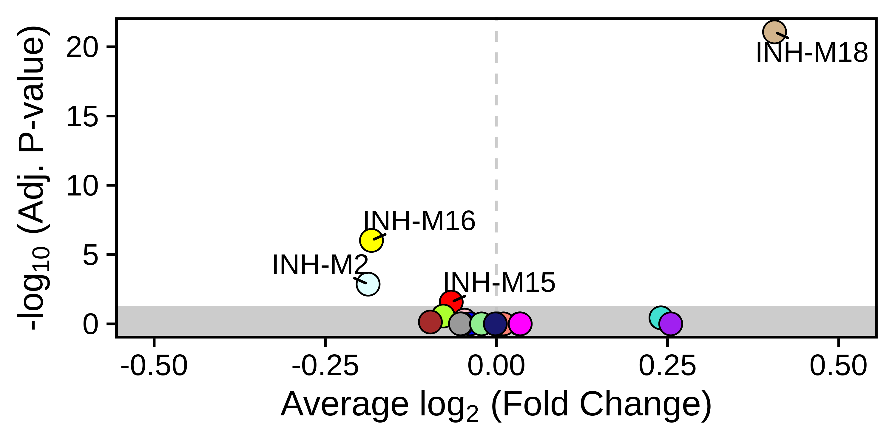
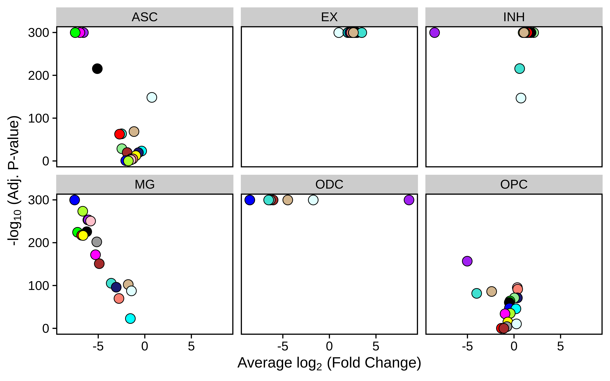

differential_MEs.RmdIn this tutorial, we demonstrate how to perform differential module eigengene (DME) analysis, revealing modules that are up- or down-regulated in given groups of cells.
First we load the single-cell dataset processed through the basics tutorial and the required R libraries for this tutorial.
# single-cell analysis package
library(Seurat)
# plotting and data science packages
library(tidyverse)
library(cowplot)
library(patchwork)
library(ggrepel)
# co-expression network analysis packages:
library(WGCNA)
library(hdWGCNA)
# using the cowplot theme for ggplot
theme_set(theme_cowplot())
# set random seed for reproducibility
set.seed(12345)
# re-load the Zhou et al snRNA-seq dataset processed with hdWGCNA
seurat_obj <- readRDS('Zhou_2020_hdWGCNA.rds')Here we discuss how to perform DME testing between two different groups. We use the hdWGCNA function FindDMEs, which is a special case of the Seurat function FindMarkers. We use the Mann-Whitney U test, also known as the Wilcoxon signed-rank test, to compare two groups, but other tests can be used at the user’s discretion with the test.use parameter.
Since the tutorial dataset only contains control brain samples, we will use sex to define our two groups. FindDMEs requires a list of barcodes for group1 and for group2. Further, we are only going to compare cells from the INH cluster since that is the group that we performed network analysis on.
group1 <- seurat_obj@meta.data %>% subset(cell_type == 'INH' & msex == 0) %>% rownames
group2 <- seurat_obj@meta.data %>% subset(cell_type == 'INH' & msex != 0) %>% rownames
head(group1)[1] "TCTTCGGCAAGACGTG-11" "ATTATCCGTTGATTCG-11" "CCACCTAGTCCAAGTT-11"
[4] "AGCGTATGTTAAGAAC-11" "GTAACTGTCCAGATCA-11" "CGATTGATCTTTACAC-11"Next, we run the FindDMEs function.
DMEs <- FindDMEs(
seurat_obj,
barcodes1 = group1,
barcodes2 = group2,
test.use='wilcox',
wgcna_name='INH'
)
head(DMEs)p_val avg_log2FC pct.1 pct.2 p_val_adj module
INH-M18 4.714924e-23 0.40637874 0.894 0.729 8.486863e-22 INH-M18
INH-M16 5.257311e-08 -0.18257946 0.850 0.935 9.463160e-07 INH-M16
INH-M2 7.565615e-05 -0.18746938 0.661 0.738 1.361811e-03 INH-M2
INH-M15 1.496899e-03 -0.06603535 0.969 0.977 2.694417e-02 INH-M15
INH-M10 1.513458e-02 -0.07774661 0.975 0.980 2.724224e-01 INH-M10
INH-M17 2.034644e-02 0.24035946 0.589 0.557 3.662360e-01 INH-M17We can visualize the results using the hdWGNCA function PlotDMEsVolcano.
PlotDMEsVolcano(
DMEs,
wgcna_name = 'INH'
)
Similar to the Seurat function FindAllMarkers, we can perform a one-versus-all DME test using the function FindAllDMEs when specifying a column to group cells. Here we will group.by each cell type for the one-versus-all test.
group.by = 'cell_type'
DMEs_all <- FindAllDMEs(
seurat_obj,
group.by = 'cell_type',
wgcna_name = 'INH'
)
head(DMEs_all)The output looks similar to FindDMEs, but there is an extra column called group containing the information for each cell grouping.
p_val avg_log2FC pct.1 pct.2 p_val_adj module group
EX.INH-M1 0 -10.313763 0.003 0.621 0 INH-M1 EX
EX.INH-M2 0 1.007115 0.670 0.445 0 INH-M2 EX
EX.INH-M3 0 2.641423 0.729 0.205 0 INH-M3 EX
EX.INH-M4 0 1.978553 0.910 0.246 0 INH-M4 EX
EX.INH-M5 0 2.447565 0.865 0.185 0 INH-M5 EX
EX.INH-M6 0 2.448315 0.877 0.209 0 INH-M6 EXNow we can plot the results with PlotDMEsVolcano
p <- PlotDMEsVolcano(
DMEs_all,
wgcna_name = 'INH',
plot_labels=FALSE,
show_cutoff=FALSE
)
# facet wrap by each cell type
p + facet_wrap(~group, ncol=3)